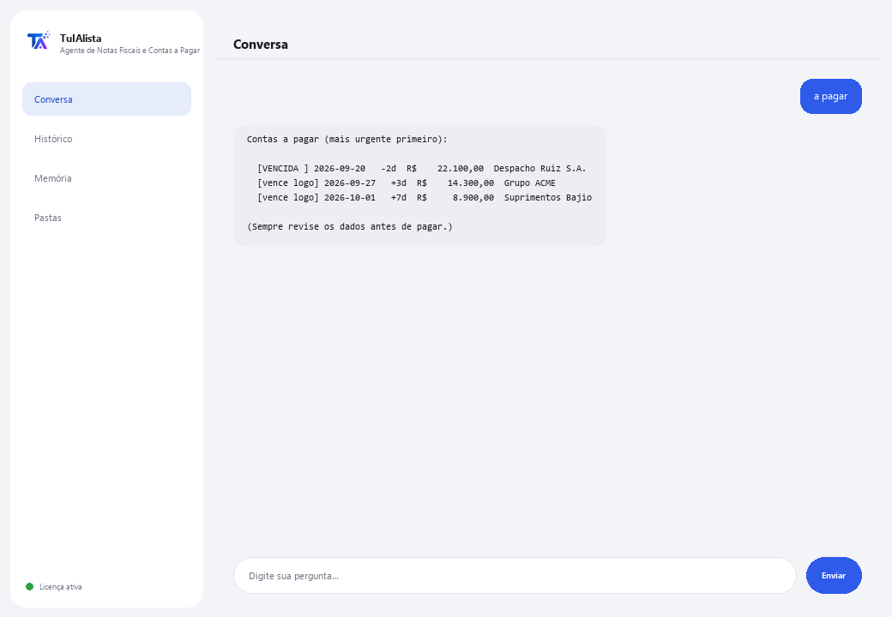

Agente de Notas Fiscais e Contas a Pagar
Diga o que você precisa com suas palavras e ele monta o Excel de notas fiscais, o resumo de impostos e as contas a pagar — sem digitar nada à mão.
O que resolve e o que você precisa?
Digitar notas fiscais à mão no Excel leva horas e é fácil pagar a mesma duas vezes ou perder um vencimento. Este agente lê seus XMLs fiscais e PDFs de notas, e monta o Excel de captura, o resumo de impostos e as contas a pagar — você escreve o que precisa como escreveria para uma pessoa, não comandos exatos.
- Você precisa: sua chave de licença (TIA-XXXX-XXXX-XXXX-XXXX) e a pasta com suas notas fiscais (XML e/ou PDF). Nada de Python nem conhecimento técnico.
- Primeiro resultado em menos de 5 minutos: instala, ativa, escolhe sua pasta e escreve exportar para montar o Excel completo.
- Suas notas fiscais nunca saem do seu computador — a análise roda localmente.
soporte@tuialista.com ou acesse tuialista.com/soporte — normalmente respondemos no mesmo dia útil.1 O que este agente faz
Você aponta para a pasta com suas notas fiscais (XML e/ou PDF) e ele:
- Captura cada nota fiscal em um Excel organizado — o que normalmente se faz à mão em horas: número, fornecedor, CNPJ, datas, subtotal, impostos, retenção, total e moeda.
- Resume os impostos do período, somando o que cada nota declara por moeda (base, imposto, retenção, total).
- Monta suas contas a pagar com alertas do que está vencido e do que vence em breve.
- Detecta notas fiscais duplicadas.
- Responde qualquer pergunta ou pedido sobre sua carteira de notas fiscais com suas próprias palavras — você não memoriza comandos.
O trabalho de captura e cálculo segue regras fixas já testadas, no seu computador (não usa IA, não erra por invenção): lê o XML de forma exata e qualquer nota em PDF por leitura de texto. O resultado: você paga em dia, sem duplicar, com seu Excel de notas pronto sem digitar nada.
2 Instalação (2 minutos)
Para Windows. Não precisa de internet o tempo todo nem enviar nada para a nuvem.
Baixe o instalador em tuialista.com/descargar (agente Notas Fiscais) e abra-o. Ele cria um atalho na sua área de trabalho com o logo — não precisa de Python nem terminal.
Dê duplo clique no novo ícone. Cole sua chave de licença (você a recebeu por e-mail na compra) e clique em Ativar. Você verá um check verde quando for válida.
Selecione a pasta com suas notas fiscais e clique em Começar a usar o agente. Na próxima vez ele abre direto — lembra sua chave e sua pasta.
3 Como usar
O agente abre uma janela de chat, como um app de mensagens — não é uma tela preta de programador. Você não memoriza comandos exatos: escreve o que precisa quase como pediria para uma pessoa, clica em Enviar (ou Enter), e ele faz o trabalho. Estas são as 4 coisas principais que ele sabe fazer, com exemplos de como pedir:

> exportar / gerar o Excel / capturarMonta um Excel com tudo: captura de cada nota, resumo de impostos e contas a pagar, pronto para abrir.
> impostos / quanto de impostoResumo de impostos do período: base, imposto, retenção e total, somado por moeda.
> a pagar / o que vence / quanto devoSuas contas a pagar, mais urgente primeiro: vencidas, a vencer em breve e em dia, com fornecedor e valor.
> duplicadas / notas repetidasDetecta notas que parecem estar carregadas duas vezes (mesmo número/chave, ou mesmo fornecedor e total).
> qualquer outra perguntaEx.: “quanto devo à ACME”, “total por fornecedor”, “compare este mês com o anterior” — o agente entende o pedido e monta a resposta ou o relatório.
Quer ver as 20 receitas completas com um exemplo real de cada uma? Consulte o Catálogo de receitas — um documento separado por ser extenso: catalogo_recetas.pdf junto com este manual, ou a versão interativa em tuialista.com/guia/facturas/recetas.
4 Exemplos de uso comum
Montar o Excel completo do mês
“exportar” — você recebe um Excel com captura, impostos e contas a pagar, pronto para revisar ou enviar ao contador.
Revisão semanal de pagamentos
“a pagar” → “duplicadas”
Fechamento mensal de impostos
“impostos do período”
Uma consulta pontual
“quanto devo à ACME este mês?”
5 Perguntas frequentes
Minhas notas fiscais são enviadas para a internet?
Quais formatos ele aceita?
Preciso escrever o comando exato?
Ele detecta duplicadas com segurança?
Ele executa pagamentos?
Em que idioma ele responde?
Ele lê um PDF escaneado?
Ele modifica minhas notas originais?
Posso mudar a pasta?
O que é o “modo seguro”?
6 Solução de problemas
Não lê um arquivo
Diz que não encontrou notas fiscais
Não detecta bem um dado de uma nota fiscal
Diz “Licença inválida” ou pede para reconectar
A IA não responde a uma pergunta livre
Nenhuma dessas soluções resolveu seu problema? Escreva para nós diretamente — teremos prazer em revisar com você.
soporte@tuialista.com ou acesse tuialista.com/soporte — normalmente respondemos no mesmo dia útil.7 Privacidade e confidencialidade
Suas notas fiscais nunca saem do seu computador.
- O agente lê e processa as notas localmente, no seu próprio computador. Não as envia para nenhum servidor.
- A captura no Excel, o resumo de impostos, as contas a pagar e as duplicadas são calculados no seu computador, com regras fixas já testadas (sem IA).
- A única coisa que trafega pela internet é: (1) uma verificação de que sua licença está ativa — que não inclui suas notas —, e (2) se você pedir algo que não é uma das 4 ações principais (uma pergunta livre), um fragmento da informação relevante é enviado ao motor de IA para responder.